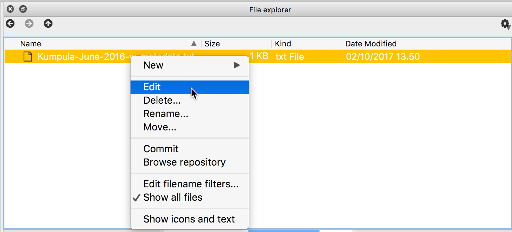
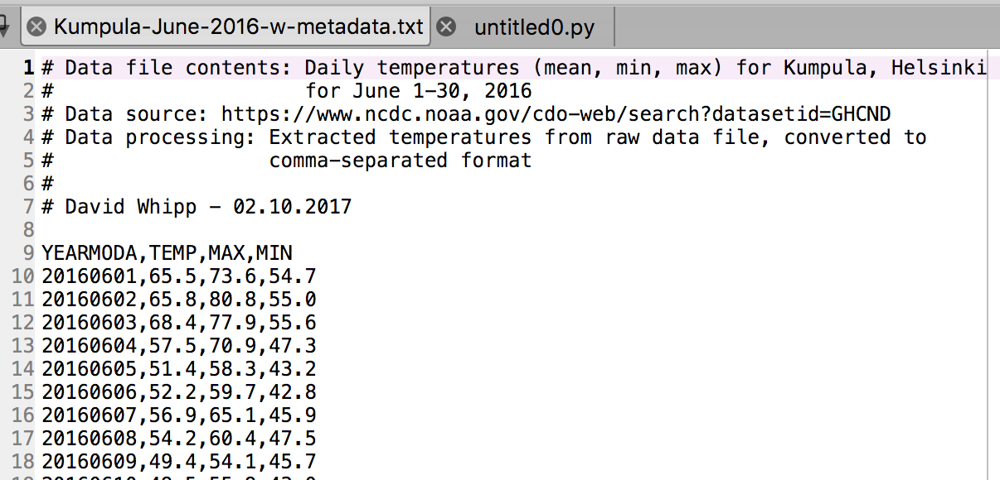

Exploring data using Pandas¶
Our first task in this week’s lesson is to learn how to read and explore data files using Pandas. Reading data files using Pandas will make life a bit easier compared to the traditional Python way of reading data files. If you’re curious about that, you can check out some of the lesson materials from previous years about reading data in the Pythonic way.
Downloading the data and preparing¶
You can start by downloading the weather data file we will be using for this part of the lesson.
- Save a copy of this file in your home directory or a directory for the materials for this week’s lesson.
- The data file contains observed daily mean, minimum, and maximum temperatures from June 2016 recorded from the Kumpula weather observation station in Helsinki. It is derived from a data file of daily temperature measurments downloaded from the US National Oceanographic and Atmospheric Administration’s National Centers for Environmental Information climate database.
- We expect something like 30 lines of data in the data file.
If you have not already started Spyder you should do so now. You can find directions on how to open Spyder at the start of Lesson 1.
Navigate in Spyder to the directory where you have stored the downloaded data file. You can do this most easily in Spyder by using the filesystem browser above the File/Variable explorer panel. Click on the file folder to select the directory where you would like to work, click Open, then click on the listed file path that is now displated beside the file folder and press Enter.

Selecting a working directory in Spyder
Reading a data file with Pandas¶
Now we’re ready to read in our temperature data file. First, we need to import the Pandas module.
In [1]: import pandas as pd --------------------------------------------------------------------------- TypeError Traceback (most recent call last) /opt/python/3.8.0/lib/python3.8/codeop.py in __call__(self, source, filename, symbol) 131 132 def __call__(self, source, filename, symbol): --> 133 codeob = compile(source, filename, symbol, self.flags, 1) 134 for feature in _features: 135 if codeob.co_flags & feature.compiler_flag: TypeError: required field "type_ignores" missing from Module
That’s it, Pandas is ready to use now. Notice we imported the Pandas module with the name
pd.Now we’ll read the file data into a variable called
dataFrame.In [2]: dataFrame = pd.read_csv('Kumpula-June-2016-w-metadata.txt')
pd.read_csv()is a general function for reading data files separated by commas, spaces, or other common separators. We use it her by simply giving the name of the file to read. If all goes as planned, you should now have a new variable defined asdataFramethat contains the data file’s contents. You can check the the contents by typingIn [3]: print(dataFrame) --------------------------------------------------------------------------- NameError Traceback (most recent call last) <ipython-input-3-23b7e8dbf202> in <module>() ----> 1 print(dataFrame) NameError: name 'dataFrame' is not defined
This looks OK, but there are some strange values present such as
NaN.NaNstands for not a number, and might indicate some problem with reading in the contents of the file. Plus, we expected about 30 lines of data, but the index values go up to 36 when we print the contents ofdataFrame. Looks like we need to investigate. We can double check the contents of the data stored indataFrameusing the Spyder editor panel. If you right-click on the data file name in the File explorer you can select Edit to view the temperature data file in the editor.Editing a file in Spyder
Now the problem is a bit more clear.
Metadata at the top of a file in the Spyder editor
There is some metadata at the top of the file giving basic information about its contents and source. This isn’t data we want to process, so we need to skip over that part of the file when we load it. Fortunately, that’s easy to do in Pandas, we just need to add the
skiprowsparameter when we read the file, listing the number of rows to skip (8 in this case).In [4]: dataFrame = pd.read_csv('Kumpula-June-2016-w-metadata.txt', skiprows=8)
Let’s now print the rows and see what changed.
In [5]: print(dataFrame) --------------------------------------------------------------------------- NameError Traceback (most recent call last) <ipython-input-5-23b7e8dbf202> in <module>() ----> 1 print(dataFrame) NameError: name 'dataFrame' is not defined
That looks more like it.
So, what happened? Well, the file data was read into a Pandas DataFrame, which is just a two-dimensional structure used for storing data like a spreadsheet. In fact, one of the neat things in Pandas is that that DataFrames have labelled axes (rows and columns). For our example, we have the rows labeled with an index value (
0to29), and columns labelledYEARMODA,TEMP,MAX, andMIN. This is nice because we can easily use these labels to divide up our data and make interacting with it easier as you’ll see later in the lesson.Now we can move on to exploring our data.
Note
The example above, trying to read a datafile with some header text (the metadata in this case), is very common. Reading data into Pandas is pretty easy, but it helps to have a sense of what the datafile looks like before you try to read it. The challenge can be that large datafiles might not nicely load into the Spyder editor, so it might be better to look at only the top 5-10 lines of the file rather than loading the entire thing. Fortunately, there are solutions to that problem. [1]
{kind=link}
{kind=link}
Exploring our dataset¶
So this is a big deal for us. We now have some basic Python skills and the ability to read in data from a file for processing. A normal first step when you load new data is to explore the dataset a bit to understand what is there and its format.
Let’s start by looking at the different columns we have in our DataFrame. We can find this in the
columnsattribute that is part of the DataFrame data type, something that is known automatically for this kind of data.In [6]: print(dataFrame.columns) --------------------------------------------------------------------------- NameError Traceback (most recent call last) <ipython-input-6-a60faba7eaca> in <module>() ----> 1 print(dataFrame.columns) NameError: name 'dataFrame' is not defined
Here we see the names of the different columns in the datafile, as one might expect.
We can also find information about the rows in the datafile using the
indexattribute.In [7]: print(dataFrame.index) --------------------------------------------------------------------------- NameError Traceback (most recent call last) <ipython-input-7-0237420587a1> in <module>() ----> 1 print(dataFrame.index) NameError: name 'dataFrame' is not defined
Here we see how the data is indexed, starting at 0, ending at 30 [2], and with an increment of 1 between each value. This is basically the same way in which Python lists are indexed, but it suggests that maybe there are other ways to identify the rows in data using Pandas. Again, we’ll see a bit more about this later. For now, it is also useful to point out that if you want to just know how many rows you have, you can use the
len()function.In [8]: print(len(dataFrame.index)) --------------------------------------------------------------------------- NameError Traceback (most recent call last) <ipython-input-8-ede550908b25> in <module>() ----> 1 print(len(dataFrame.index)) NameError: name 'dataFrame' is not defined
Attention
Based on what we have seen so far, what would be output if you did the following using our data file?
In [9]: dataFrame = pd.read_csv('Kumpula-June-2016-w-metadata.txt', skiprows=9) In [10]: print(dataFrame.columns)
Select your answer from the poll options at https://geo-python.github.io/poll/.
We can also get a quick sense of the size of the dataset using the
shapeattribute.In [11]: print(dataFrame.shape) --------------------------------------------------------------------------- NameError Traceback (most recent call last) <ipython-input-11-f146b6754a8c> in <module>() ----> 1 print(dataFrame.shape) NameError: name 'dataFrame' is not defined
Here we see that our dataset has 30 rows, 4 columns, just as we saw above.
Now let’s consider the types of data we have in our DataFrame. First, let’s see what type of data the DataFrame is.
In [12]: type(dataFrame) --------------------------------------------------------------------------- NameError Traceback (most recent call last) <ipython-input-12-65a449437478> in <module>() ----> 1 type(dataFrame) NameError: name 'dataFrame' is not defined
No surprises here, our Pandas DataFrame is a Pandas DataFrame ;).
What about the data? Again, finding the types of data in the columns of the DataFrame is easy.
In [13]: print(dataFrame.dtypes) --------------------------------------------------------------------------- NameError Traceback (most recent call last) <ipython-input-13-e642788dba0f> in <module>() ----> 1 print(dataFrame.dtypes) NameError: name 'dataFrame' is not defined
The
dtypesattribute holds the data types for each column, nice. Here we see thatYEARMODAis an integer value (with 64-bit precision; int64), while the other values are all decimal values with 64-bit precision (float64).We can select a single column of the data using the column name.
In [14]: print(dataFrame['TEMP']) --------------------------------------------------------------------------- NameError Traceback (most recent call last) <ipython-input-14-8d5600ce696f> in <module>() ----> 1 print(dataFrame['TEMP']) NameError: name 'dataFrame' is not defined
As you can see, selecting a given column is straightforward. Furthermore, printing out its values shows not only the values, but also their data type. What about the type of the column itself?
In [15]: type(dataFrame['TEMP']) --------------------------------------------------------------------------- NameError Traceback (most recent call last) <ipython-input-15-9d18b63ddea0> in <module>() ----> 1 type(dataFrame['TEMP']) NameError: name 'dataFrame' is not defined
Interesting. So rather than seeing a DataFrame type or float64, a selected column from a DataFrame is called a Series in Pandas. A Pandas Series is just a 1-D list of values. In fact, you can create a Pandas Series from a Python list. If you have long lists of numbers, for instance, creating a Pandas Series will allow you to interact with these values more efficiently in terms of computing time.
In [16]: myList = [1, 2, 3, 4, 5, 6, 7.0] --------------------------------------------------------------------------- TypeError Traceback (most recent call last) /opt/python/3.8.0/lib/python3.8/codeop.py in __call__(self, source, filename, symbol) 131 132 def __call__(self, source, filename, symbol): --> 133 codeob = compile(source, filename, symbol, self.flags, 1) 134 for feature in _features: 135 if codeob.co_flags & feature.compiler_flag: TypeError: required field "type_ignores" missing from Module In [17]: mySeries = pd.Series(myList) --------------------------------------------------------------------------- TypeError Traceback (most recent call last) /opt/python/3.8.0/lib/python3.8/codeop.py in __call__(self, source, filename, symbol) 131 132 def __call__(self, source, filename, symbol): --> 133 codeob = compile(source, filename, symbol, self.flags, 1) 134 for feature in _features: 135 if codeob.co_flags & feature.compiler_flag: TypeError: required field "type_ignores" missing from Module In [18]: print(mySeries) --------------------------------------------------------------------------- NameError Traceback (most recent call last) <ipython-input-18-31dcd3c76685> in <module>() ----> 1 print(mySeries) NameError: name 'mySeries' is not definedAs you can see,
myListis converted to a Pandas Series using theps.Series()function. Also, note that Pandas is smart about the conversion, detecting a single floating point value (7.0) and assigning all values in the Series the data type float64.Just like DataFrames, Pandas Series have a set of attributes they know about themselves and methods they can use to make calculations using the Series data. Useful methods include
mean(),median(),min(),max(), andstd()(the standard deviation).In [19]: dataFrame['TEMP'].mean() --------------------------------------------------------------------------- NameError Traceback (most recent call last) <ipython-input-19-ccb54ecf610d> in <module>() ----> 1 dataFrame['TEMP'].mean() NameError: name 'dataFrame' is not defined
Here, we don’t even need to store
dataFrame['TEMP']as a separate series in order to find the mean value using themean()method.One useful function to get an overview of the basic statistics for all attributes in your DataFrame is the
describe()function.In [20]: dataFrame.describe() --------------------------------------------------------------------------- NameError Traceback (most recent call last) <ipython-input-20-61cc412c1f28> in <module>() ----> 1 dataFrame.describe() NameError: name 'dataFrame' is not defined
Here, you can quickly get the basic statistical information about all your attributes (min, max, count, std, mean, quartiles).
Finally, there are occasions where you’ll need to convert data in a Series to another data type. If you’re planning to print a large number of value to the screen, for instance, it might be helpful to have those values as character strings. Data type conversions is most easily done using the
astype()method.In [21]: print(dataFrame['TEMP'].astype(str)) --------------------------------------------------------------------------- NameError Traceback (most recent call last) <ipython-input-21-2fce7e334ccd> in <module>() ----> 1 print(dataFrame['TEMP'].astype(str)) NameError: name 'dataFrame' is not defined
In this case, the object data type indicates the temperature values are stored as character strings. A more obvious case is converting to integer values.
In [22]: print(dataFrame['TEMP'].astype(int)) --------------------------------------------------------------------------- NameError Traceback (most recent call last) <ipython-input-22-558206cfac41> in <module>() ----> 1 print(dataFrame['TEMP'].astype(int)) NameError: name 'dataFrame' is not defined
Here you can clearly see the temperature values are now whole numbers.
Caution
Be careful with type conversions from floating point values to integers. The conversion simply drops the stuff to the right of the decimal point, so all values are rounded down to the nearest whole number. For example, 99.99 will be rounded to 99 as an integer. This can be dangerous in some cases.
Hence, it might be good to round the values before converting them to integers. Chaining the round and type conversion functions solves this issue as the
.round(0).astype(int)command first rounds the values with zero decimals and then converts those values into integers.
Footnotes
| [1] | When you’re trying to think over how to read in a data file you can take advantage of common command-line tools like head. head is a simple program to read lines from the start of a data file and print them to the screen. Linux or MacOS users can use head from the command line in a Terminal window as follows $ head Kumpula-June-2016-w-metadata.txt
# Data file contents: Daily temperatures (mean, min, max) for Kumpula, Helsinki
# for June 1-30, 2016
# Data source: https://www.ncdc.noaa.gov/cdo-web/search?datasetid=GHCND
# Data processing: Extracted temperatures from raw data file, converted to
# comma-separated format
#
# David Whipp - 02.10.2017
YEARMODA,TEMP,MAX,MIN
20160601,65.5,73.6,54.7
As you can see, head gives you the first 10 lines of the file by default.
You can use the $ head -n 5 Kumpula-June-2016-w-metadata.txt
# Data file contents: Daily temperatures (mean, min, max) for Kumpula, Helsinki
# for June 1-30, 2016
# Data source: https://www.ncdc.noaa.gov/cdo-web/search?datasetid=GHCND
# Data processing: Extracted temperatures from raw data file, converted to
# comma-separated format
Windows users should also be able to use head via the Anaconda Prompt available where Anaconda is listed in your installed programs. After you open the Anaconda Prompt you should be able to change into the directory containing your data file and use head. |
| [2] | Note again here that the last value in the list of indices is not included in the range, just like when you use the range() function. |